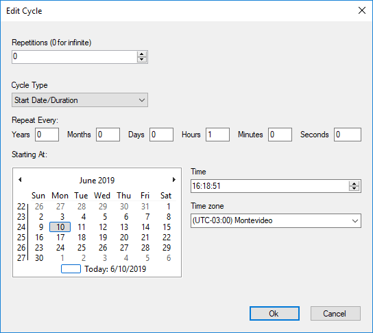

Specifies a number of repetitions and a time interval, defined by the duration and start or end date of those repetitions. Scope Objects: Business Process Diagram Description
Visible if Timer definition property is set to 'Cycle' and Timer expression type property is set to 'Rule'. Allows setting a date and time, as well as information related to the event's repetitions and its cadence. Useful to periodically send notifications if the Activity takes too long.  Run-time/Design-timeThis property applies only at design-time. How to apply changesTo apply the corresponding changes when the property value is configured, execute a Build All. AvailabilityThis property is available since GeneXus 16 upgrade 4. See Also
|
| Backlinks | |
| Timer Intermediate Event in BPD | Timer Start Event in BPD |